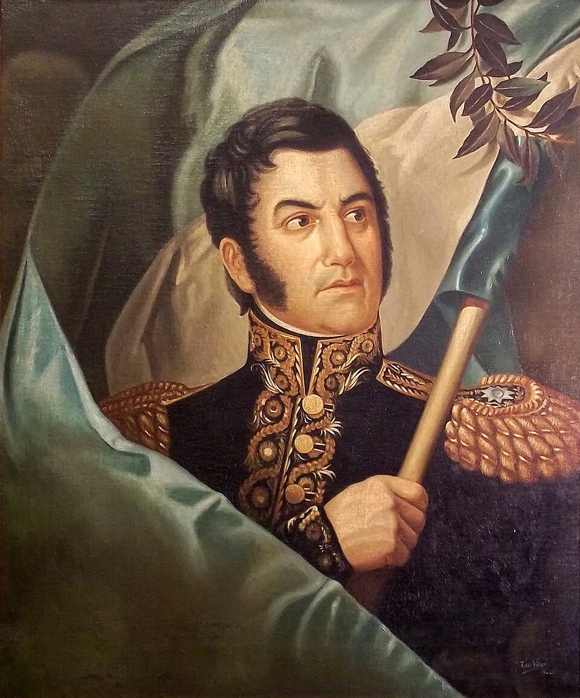

Ha muerto el general San Martín, libertador de tres naciones
El vencedor de San Lorenzo, Chacabuco y Maipú falleció a las tres de la tarde en su casa de Boulogne-sur-Mer, a los 72 años, acompañado por su hija Mercedes. Muere pobre, lejos y en silencio el hombre que cruzó los Andes.

En el segundo piso de la casa de la Grande Rue donde vivía sus últimos años, dejó de existir esta tarde el general José de San Martín. Lo asistían su hija Mercedes y su yerno Mariano Balcarce. Cuentan que el dolor lo visitaba desde hacía días y que apenas dictó sus últimas disposiciones con la misma serenidad con que alguna vez dispuso batallas. Tenía 72 años, casi la mitad vividos fuera de la patria que ayudó a fundar.
Cuesta abarcar en una columna lo que este hombre hizo en apenas una década. Organizó de la nada el ejército con que cruzó la cordillera de los Andes, hazaña que los entendidos comparan con las de Aníbal; libertó a Chile en Chacabuco y Maipú; llevó sus barcos al Perú y proclamó su independencia en Lima. Y en Guayaquil, en una entrevista cuyo secreto se lleva a la tumba, cedió el campo a Bolívar y se retiró sin ruido, para no ser él la causa de una guerra entre americanos.
Su destierro fue largo y sin estridencias. Dejó estas costas en 1824, cuando comprobó que su espada ya sólo podía servir para ensartar argentinos contra argentinos, y vivió desde entonces en Bruselas, en su quinta de Grand Bourg y últimamente en esta ciudad de pescadores, buscando el aire del mar para los ojos casi ciegos y los males viejos de tantas campañas. Dos veces estuvo cerca de volver: en 1829 llegó hasta la rada de Buenos Aires y no bajó del barco, porque lo que se disputaba en tierra era exactamente aquello de lo que se había ido. Cuando escuadras extranjeras bloquearon el Plata, en cambio, escribió sin vacilar que en pleito de la patria con potencias de afuera su nombre estaba donde debía: con la patria, gobernara quien gobernara.
Los vecinos de la Grande Rue conocían apenas a un anciano cortés que salía poco, cuidaba su jardín y trabajaba la madera con sus manos, y que había escrito para la educación de su hija unas máximas que caben en una esquela: que sea humana, que ame la verdad y la aborrezca mentirosa, que respete la propiedad ajena, que hable poco y lo preciso. En su cuarto quedaron los libros de siempre, el catalejo de las campañas y ningún lujo: el general vivió con estrechez de renta corta, él, que administró los tesoros de tres países y rindió cuentas hasta del último real. A la Argentina le deja, además del pedido de que su corazón repose en Buenos Aires, el sable corvo que lo acompañó en toda la guerra de la independencia, legado por testamento con destinatario escrito de su puño y letra.
Eligió después el destierro antes que desenvainar la espada en las discordias civiles, y la pobreza digna antes que los honores de los gobiernos que lo reclamaban de adorno. En su testamento pide que su corazón repose en Buenos Aires. Alguna vez estas provincias, hoy enredadas en sus querellas, comprenderán cabalmente a quién despiden: al padre que se fue de casa para que los hijos pudieran pelearse en libertad.